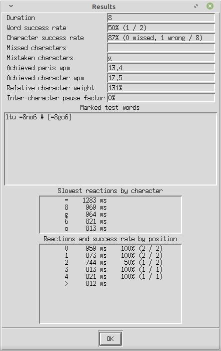

This computer application has been created by Colin Berry (M0GXV) to help you to learn and improve your proficiency in receiving morse code (CW), by enabling you to create exercises to suit your level of expertise. This article explains how it works and how to profitably use it.
The program is written in perl, which natively runs on Linux and also works on Windows using a suitable implementation, such as "Strawberry Perl". The following perl modules are used, which may need to be installed:
The application can be downloaded from my BerryliumProjects github repository. If you are a git user, then feel free to amend the program however you want, and possibly even feed back improvements. Otherwise you can download a zip of the files (they are all in a single location) and unpack that locally. Open the installation directory in a shell and type
perl morsedlg.plto run it.
There is a main dialog, in which you select audio parameters and select a type of exercise, separate dialogs for each exercise type, and a final results window with an analysis of how you performed, both in terms of accuracy and speed of response. In addition, the terminal shell from which perl is launched shows response time analysis detail, and is used in the "visual mental word building" exercise. The main dialog has a set of default settings which you can alter as required. These affect the type of exercise, what words or characters will be included, and how the audio is generated.
Main DialogThe first screen you will see allows you to select a type of exercise, and to control how the sound of morse code is created. Various parameters can be set to provide a comfortable listening experience, at a speed to suit you. There are also a couple of features to make differentiating between dits and dahs easier as a beginner. Keying rate and weightCharacter WPM determines the fundamental pulse used to time the sounds and gaps between them within a character. This uses the 'PARIS' standard of 50 pulses per average word, including the standard gap following it. This results in a pulse time (length of a dit sound) of (1200 / WPM) milliseconds. Note that this is always used irrespective of how words are constructed, even if a natural letter frequency distribution isn't being used. If you wish to use the alternative 'CODEX' timing standard designed for randomly selected letters (60 pulses per average word), increase the Character WPM and Effective WPM by a factor of 1.2. Dash weight allows the dah sound to be adjusted to be longer or shorter than the standard 3 pulses. It can be fractional. A longer dah sound is easier to differentiate from a dit, and a slightly shorter sound can be used to practice receiving morse sent from a straight-key, where the element lengths can be quite variable and not to the standard timings created by a paddle and keyer. Alternatively, a longer dah sound mimics how many semi-automatic bug keys often sound. Note that this adjustment will alter the effective communications speed. Farnsworth and word spacingWhen learning to copy at slower speeds, it is recommended to keep the sound of the characters short enough to be recognised as a whole pattern, rather than having to be mentally assembled from dits and dahs. This is achieved by reducing the Effective WPM to below the Character WPM, which increasing the gaps between characters and words. Start out with a Character WPM between 15 and 20, then gradually increase the Effective WPM up to the same speed. The thinking time between characters reduces noticeably as the two speeds converge. Whilst you should aim to become comfortable with the speeds being equal (which results in standard rhythm), an alternative strategy is to increase the Character WPM further, which provides a slight increase in thinking time and trains the ear to recognise the patterns more instinctively. When training without the Sync after each word mode, it can be useful to increase the gap between words for more thinking or typing time, while maintaining proper gaps between characters. Standard timing uses the equivalent of a silent dah or two dits between words, in addition to the inter-character gap. To increase this, specify a positive whole number in Extra word spaces. This adds further silent dahs (4 pulses each). Pitch and volumeBy default, a pitch of 600 Hz is used, but this can be adjusted, perhaps to match your preferred sidetone setting on a transceiver, using Note pitch in Hz. Listening at lower pitches can also help differentiate between closely spaced signals on-air, although very fast code may need a higher pitch. If you initially find it difficult to differentiate between dits and dahs, it is possible to make them sound at slightly different pitches. A positive number in Dash-dot pitch shift will cause dits to sound that number of semitones higher in pitch than dahs, keeping the average pitch the same. Try to eliminate this shift as soon as you can, so you don't become dependent on it. As the speed increases, the shifts can sound quite wild and distracting. The volume of note emitted can also be adjusted. Tone volume attenuation reduces the volume by that number of decibels. It is recommended to increase this number until the note is quiet while remaining clearly audible. This discipline also helps to naturally reduce the perception of background noise when listening on-air. If you do this, note that shorter pulse times need more volume to be perceived accurately. Having selected the desired audio parameters, click Calibrate to verify them. This will play "PARIS PARIS" at the selected pitch and WPM. If the program is being run in a virtual machine, it is possible that this could affect the rate of playing sound samples, resulting in the wrong pitch and WPM rates. To detect if this is occurring, try calibrating on a pitch of 440 Hz. If the A note pitch is incorrect (or less reliably, the time between the two words), you can enter a correction rate in Playing rate factor, which will also fix playing speed. |
Types of exerciseSubstituting artificial exercises for real-world CW copying carries the risk that the mind learns to be good at the exercise rather than the skill that it is intended to develop. For example, I found that listening and typing in what I heard, created a shortcut between my ears and my fingers which bypassed my consciousness - so didn't move me forward to my aim of improving head-copy. So it's important to vary the types of exercises to avoid this. A computer generated exercise can also be just too "perfect", in the sense that doesn't reflect on-air listening, with noise, fading, distraction from other signals, variations in timing and of course human error. Computerised morse readers can also struggle in these conditions, yet it is possible with practice and experience for the human ear and mind to do better. To achieve this, it is also important to expose yourself to real on-air listening, both at a speed you can mostly understand and also in conditions where you struggle. This experience will inform what sort of exercises would be of benefit. Each type of exercise has options appropriate to it. These are explained later. Single charactersThis exercise can be used in several ways. If you have no knowledge of morse code at all, type some characters into the entry box and click Play. Listen to how they sound, separately and in combination. This is a great way to start to learn the code as sound patterns first rather than printed dashes and dots. To systematically learn to use morse code, you could select some characters in the Characters to practise list, having selected a low effective wpm in the audio dialog (the "Farnsworth method" of learning). If you want to learn following the classic "Koch method", you can get an introduction to the character set being used by entering a positive number in Koch method level, which can be used as a prelude to the random sequences exercise. If you enter a character incorrectly, it will repeat the same character one more time. Random sequencesThis is similar to the Single Characters mode, but characters are grouped with proper spacing between them, with a pause at the end for you to type back what you heard. If you want characters to reflect their frequency in English, select Use relative frequencies. In Koch mode, this instead puts more emphasis on the most recently learned characters. You can see the effect of this in the Extra character weights field, which can also be adjusted directly. Although you can type as soon as you recognise a character pattern, I recommend not starting to type until the end of the 2nd character, to give proper processing time and to practice hearing, thinking and typing concurrently rather than sequentially - you won't have time to do that beyond an unrealistically slow speed. As well as random characters, other exercise types apply structure to the sequences, which helps with recognising and remembering patterns within words, enabling longer words to be mentally assembled. PhonemesEach collection of vowel letters making up a valid vowel sound (for example 'ea'), and each combination of consonant letters making up a valid consonant or group (for example 'str') is referred to as a phoneme, an elementary component of speech. The common phonemes can be recognised as sub-sequences within a word when copying morse code, and this makes mentally building up the word easier. This exercise practices them in isolation; the Pseudo Words exercise groups them. Pseudo WordsEnglish words are mostly composed by alternating vowel phonemes with consonant phonemes, for example sch-oo-l. When first moving from random character recognition to words, ideas with a recognisable meaning tend to distract from keeping up, as the mind wants to visualise the word's meaning. The excitement and sense of achievement at recognising a word can also make you lose flow. As an aid to avoiding such distraction, it can be helpful to create sequences which follow the expected phoneme-alternation pattern, but which aren't meaningful words. This helps the mind to stop trying to look for meaning, as none is expected, yet the skill of phoneme recognition is still being developed. Pseudo-words can start with either a vowel or consonant element. Each element is categorised as to whether it can meaningfully appear at the beginning, middle or end of a word, to make the compositions seem more realistic. Caution: artificially invented pseudo-words are not checked to ensure they are (or sound) meaningless. It is possible to get sequences which resemble dictionary words (even rude ones!), but this is simply due to randomness. The same coincidence can of course occur with purely random letter sequences, but the likelihood is much less. NumbersThis is similar to the random sequences exercise, but the group of characters relates to how numbers are represented. Note that it is common to use "R" to mean a decimal point (it sounds like an abbreviation of the longer full stop character). CallsignsA very useful skill is copying down callsigns. Their specific structure helps with memory, and also they are sent frequently so that they can be copied in stages (first 3 characters, then last 3 on the next repetition). The simplest exercise does not include the '/' character and restricts the prefix to a list of common european ones. Options enable more complex possibilities. Common wordsThis is an alternative to choosing words from the main dictionary. The 100 most common English words, irrespective of length, are included (the longest is 7 characters - 'because'). You can also filter these using Min word length and Max word length. This exercise is good for helping develop natural rag-chew type interaction. Quite a few of these words have established abbreviations (such as fer, cud and es), which you can practice in the QSO terms exercise. Dictionary wordsThis enables you to practice assembling real words with identifiable meanings. Over 4000 words are possible, but most of them are quite long and so more difficult to assemble. There are two approaches to make this exercise more achievable for a beginner. You can choose the minimum and maximum word lengths (defaults are 1 to 6); and you can also optionally restrict to studying the overall sound of a small selection of words of similar difficulty. Both of these criteria are applied when selecting words. You can set the maximum length you are comfortable with - you will forget the first part of the word beyond a certain length, which you can practise to increase over time. You can also set the minimum length if you wish, but it is best to avoid setting it the same as the maximum - you will very quickly adapt to expecting a certain number of characters and will mentally pace yourself. Real language doesn't work like that! To focus on a small set of words to learn their sounds by repetition, first specify a positive index number in Dictionary sample offset and the possible number of alternative words in Dictionary sample size. The dictionary is sequenced in order of increasing difficulty, which I have defined as firstly number of characters, then number of morse code elements (dits and dahs). So for example 'we' is before 'up' (longer morse pattern) which is before 'tea' (longer word even though less elements). Therefore you should leave the word length range unconstrained for this exercise. QSO termsMany abbreviations have arisen in amateur radio, to help speed up what is fundamentally a slow information exchange (or narrow bandwidth, to put it another way). As well as some well known "Q codes" such as QTH for location, you might hear RST for a signal report (readability / signal strength / tone quality) followed by the often-misused 599 or 5NN. I have included common abbreviations and also some longer words describing antennas (magloop, dipole, vertical etc), weather and popular equipment brands. You may wish to preview the list of terms in the qsowordlist.txt file and research their meaning, or to add any others you want. It's definitely not an exhaustive list and there are sometimes a variety of spellings. QSO phrasesThis extends stand-alone QSO terms to include some entire meaningful phrases, concluding with a break character - for example "73 es hpe cuagn =". Statements about antennas, weather, operator names, rigs, signal reports etc are included. The aim is to develop anticipation for information (if head-copying, picking up the clue for when to start writing in the log) and to familiarise with the peculiar type of "sentence structure" often used. Exercise Action ButtonsAs these are common to most exercise types, these are described together here.
GenerateWhile experimenting with word lengths and types of words, click Generate to see what a typical exercise text might look like. This can then be used in conjunction with the Play action or the Use specified words option. AutoWeightAfter completing an exercise, you can click AutoWeight to populate the Extra character weights with characters you missed or incorrectly copied, together with what you thought they were. If you have selected character reaction times, you will also add weight to characters to which you reacted relatively slowly (more than 20% of your average). PlayThis will play the text in the entry box, without expecting any input from you. It can be used with a single character to hear what it sounds like, or a generated sequence, or you could paste in a passage of written text from elsewhere and play that. If nothing is entered, the generate function will be invoked but the text won't appear until the end. If you follow the text as you listen, that can help with associating sound with meaning. If you look away, you can practice recording what you hear on paper, which is far more practical than a computer keyboard when working portable. By using play on the same text repeatedly, you can practice recognising a stable set of words until they become more familiar. If you add some extra inter-word spaces, you can practice sending them using a key to improve hand coordination. Pay attention to what your own sending sounds like compared to the perfectly generated original and be prepared to adjust until it is close as you can get. FlashThis is a fun activity to help assemble characters into meaningful words. Make sure you can see the terminal window before starting. Characters will sequentially appear and disappear - relax and practice forming them into whole word in your mind. No typing is involved. At the end, the whole text will be shown. You can enter text beforehand and it will use that, otherwise it will generate some. The characters appear at a rate consistent with the effective wpm selected, although the timing is uniform rather than varying with the length of the equivalent morse patterns. StartThis initiates an interactive exercise, where you type back in what you hear. It clears anything in the text box, and shows your input instead. FinishThe playing will continue until the specified duration is reached. If you need to stop it prematurely, click Finish. Free-running audio may continue playing for a short while, due to internal caching. CancelOnce an exercise is finished, you will remain in the same exercise dialog so you can run it again. Cancel will return you to the main dialog. Note that if you just amend audio parameters and then return to the same exercise type, the previously selected exercise options will be reinstated. Exercise OptionsAs these are common to many exercise types, these are described together here. Practice session timeIf the exercise is free-running (not waiting for a response between words), the number of words generated is determined in advance and based on an estimate of how long their morse code will take to play. Otherwise, the exercise finishes after the specified duration. It does not constrain playing pre-entered text. The default is 2 minutes, which is a balance between concentration span and frequency of feedback. You can set it to a longer period to enable you to enter into a state of "flow" and enable the decoding process to become more automatic, once you have reached enough proficiency. Characters to practiseIn single character and random sequence modes, this can be used to restrict the subset you have learned so far, or to focus on a specific set which are harder to differentiate. Avoid using a set which is too small, to avoid just concentrating on the specific differentiating feature rather than recognising the whole character in a general context. You can delete characters you don't want to include (for example to focus on letters and some punctuation). Extra character weightsEach character here will increase the frequency that it comes up in random selections. The same character can be repeated to increase its likelihood further. It can be populated using the Use Relative Frequency option and the AutoWeight action. Koch method levelThis enables you to learn characters in a recommended order, becoming proficient in each one in the already-learned context (assessed as reaching 90% recognition accuracy overall) before advancing to the next level. This defaults to level 0, which disables this feature and makes the full character set available. Repeat wordsIt can be helpful to strengthen familiarity to listen again to each word, having first decoded it. This number determines how many additional times the word is played before moving on to the next one. In the context of single characters, this means repeating the single character. This is in addition to the automatic single repeat of a word which was not correctly typed in, when in synchronised mode. Character reaction timesInitially, you will want to type the letters of a sequence back in shortly after they are received, so you only need to concentrate on this aspect. Select this option if you intend to do this. It also enables more meaningful selection of characters to focus on using the AutoWeight feature, by detecting unfamiliar ones that you take significantly longer than average to recognise. As you progress to assembling whole meaningful words mentally and then entering them at the end of the word, disable this option. This prevents characters early in a word from being perceived as unfamiliar due to the longer time before you start typing. The statistics reported are also adjusted to be more meaningful.
Retry mistakesThis option repeats a word entered incorrectly one more time, to give a second chance to recognise it correctly. It will be disabled in the free-running exercise mode. Disable this if you want to practice recognising a word mentally ("head copy") without typing it back in, but still want to allow yourself as much time as needed; or if are copying on paper rather than typing. In this case, just press Space to proceed. Minimum and maximum word lengthsYou can restrict the range of lengths, perhaps to practice stretching your word assembling skills to the next higher length. It's best not to set these identically, to avoid anticipating the length and optimising the mental processto that context. However to ensure they are valid, the maximum will be set to the same as the minimum if it is lower. Sync after each wordThis option causes an exercise initiated by the Start button to pause after each word, rather than be free-running. It will cause the two measures of achieved speed to diverge, as one relates to accuracy and the other to quantity. Whilst providing immediate feedback of correctness, you need to disable it to practice the automatic and integrated mental processes of concurrently listening, decoding and recording, and to learn to "let go and keep up" when you stumble or get distracted. In real life, the sender doesn't wait for each word to be recognised and recorded before moving on, although if very understanding, may leave extra time between words, which you can also simulate with extra word spaces. In this case, you could try to wait until the next word starts before typing the previous one, to practice overlapping those activities. A key skill here is to stay calm and be prepared to let go of characters if it would otherwise mean getting behind the natural flow. Trying to finish the previous word will result in missing the start of the next word. The start of words carries more meaning than the ends in English, and the word sense will be lost if the start is missing. It is also more difficult to pick up in the middle of a word. You may notice that the sending speed appears to get quicker after a while. This is an illusion caused by your brain slowing down. If you carry on, it seems to adapt to the demands of concentration and the effect passes. Allow backspaceTo be accurately assessed, you will want to be able to correct mis-typing. It is natural to want to get everything right and feel a sense of achievement of quality. However in a free-running mode this is a distraction and makes it even harder to keep up and remain in "flow". To discourage you from being tempted to have this perfectionist attitude, you can disable the action of the backspace key. Now you must accept mistakes as history and not be tempted to go back and correct them. It's a private game with no one watching critically. Even in an on-air QSO, the other person has no idea how much you copied. As you improve, the general sense of conversation may enable the missed meaning to be inferred from the context. Use specified wordsIf you have difficulty with certain words, or telling similar words apart, you can enable this option and list them in the text entry box before you start. The specified words are added into the possibilities provided by the exercise, at a suitable frequency. Try including similar words such as "what when where that then there" or perhaps easily confused sequences like "str sc". After completing an exercise and reviewing the results, any incorrectly copied words will be put into the text box, so that you can easily increase their frequency for the next run, using this feature. Use standard callsignsThis is the default mode for callsign practice. There are no operating suffixes such as '/p'. If you disable this option, some callsigns will have a suffix which could be /p, /a, /m or /mm. European prefixesThis option uses a simplified list of typical European country codes to construct callsigns. After a while you will start to recognise the country prefix codes - their meanings can be seen in the europeanprefixes.txt file. A number and either 2 or 3 letters follow the prefix. If you fancy imagining a global propagation lift, disable this option to use totally randomised prefixes. Use complex callsignsSelect this for a more advanced variation of the callsign copying exercise, which will include slashes to indicate non-native operation and various suffixes like /p. This also works with European prefixes to constrain both the original callsign and the country of operation. You will soon feel envious at all the great adventures those globe-trotting operators are enjoying! |
Performance analysisIf you type into the application what you hear, then it can provide some interesting analysis of your performance. It is not intended to be an objective test of how well you would cope as an on-air morse listener - there are additional skills which need to be practised to function effectively in those scenarios, such as dealing with noise, fading, other signals, unevenly formed characters, inadequate word gaps, and spelling mistakes by the sender. However getting an indication of how you are progressing can be encouraging, and highlighting which characters or sequences you find challenging can help you focus your efforts. Some aspects of detailed analysis depend on how you intend to copy - a character at a time or a whole word at a time. If a character is copied incorrectly, the application considers the whole word entered to make a reasonable assessment of whether it was missed or mistaken. Also if not syncing after each word, the application considers if a whole word was missed, based on subsequent words successfully aligning with the test words. General statisticsDuration shows how many seconds the exercise actually lasted. The selected target duration (in minutes) was used to estimate how many words to generate (for free-flowing audio) or when to stop providing new words (if pausing after each word). However the composition of words and factors like dit/dah length ratio can alter how much audio is played; and the exercise is deemed to finish only when you have finished typing. Duration should be considered when evaluating performance, as longer exercises are more tiring. Word success rate shows what percentage of words were copied correctly. The actual numbers copied and presented are also shown. See the marked text for details - note that a completely missed word can cause all subsequent words to be marked as wrong, if re-synchronisation of words failed. Character success rate shows what percentage of characters were copied correctly. An analysis of whether characters appear to have been missed completely (if the word entered is too short) or mistaken is also shown. Note that any excess characters entered beyond the expected length are ignored and not marked as wrong. Missed characters lists those characters which appeared in the test which were skipped on input. Duplicates are removed. This gives an indication of characters which required too much thinking time and had to be abandoned to keep up with the test; or alternatively characters which were skipped AFTER dwelling too long on an unfamiliar character or trying to finish decoding and typing a previous word. This latter case is also indicated by a poor initial character success rate shown in the word position report. Mistaken characters lists those characters which were typed incorrectly. This could be due to "fat fingers" catching an adjacent key, or confusion over numbers of dits in a sequence for example. Check the marked test words to determine the likely reasons for mistakes, and devise a suitable focussed exercise to address any recurrent issues. Achieved paris wpm is an indication of how much information is being processed successfully, based on the number of pulses in the words played. Longer pauses between words, as well as typing time if waiting for each word to be input, will reduce this statistic. Achieved character wpm is an alternative indication of attained speed, based on how accurately characters are being copied, at the effective wpm specified. It is not affected by typing time if waiting for each word to be entered, and also not affected by character length; so is likely to be an overstatement of capability. Relative character weight shows the actual average character length (in pulses) compared to that assumed in the PARIS standard. Random characters including punctuation and numbers will result in a factor over 100%. It is difficult to copy very short characters (E being the hardest) as thinking and typing speed is unlikely to keep up, but also hard to recognise very long sequences such as punctuation. Suitable exercises of both these extremes are useful. Inter-character pause factor shows how much inter-character gaps are longer than the standard. Having an effective wpm lower than character wpm will give a positive value here. Marked test words shows the details of what you entered compared to what was played. Incorrect words will be marked with a # and the correct word shown. Look for any patterns you can work on. Be aware that alignment of words and characters may fail unless errors are spaced well apart. Character copying modeThese analysis outputs are shown if Character reaction times was selected on the main dialog. Slowest reactions by character lists the 5 characters you took the most time to recognise and type in, along with the number of milliseconds taken. The characters are ordered by improving reaction time. The space at the end of a word is also treated as a character and is identified by the '>' symbol. This can be an aid to know what to focus on, but note that characters presented near the start of words may show longer reaction times, particularly if you are trying to wait for a few characters to be heard before typing. The most accurate comparison is therefore with a word length of 1 character. Reactions and success rate by position provides an alternative reaction time analysis, this time by considering the position of the character within a word, where 0 is the initial character. Up to 9 character index positions are shown. The space at the end of the word is denoted by '>'. Alongside this, the percentage and fraction of cases which were copied correctly is also shown. This can illustrate if your success tails off after a certain number of characters have been copied, or if you are missing the beginnings of words as you are still processing the previous word. If you find you lose track in the middle of longer words and have difficulty getting back into sync with the incoming sound, this analysis may help you track progress in letting go promptly to try and catch the end of the word. In fact plain English can be surprisingly readable if just the beginnings and ends of words are seen.
Word copying modeIf you have progressed to mentally assembling a word before typing it, then this mode may be more useful to measure your mental processing time. The following statistics are calculated rather than per-character reaction times:
The Success rate by position report is also shown in this mode, however no reaction times are shown as these are irrelevant. |
Detail in terminal outputAfter a summary of the parameters passed to the audio player component (morseplayer2.pl), a detailed log of responses and reaction times are shown at the end of the exercise. The fields shown are:
|